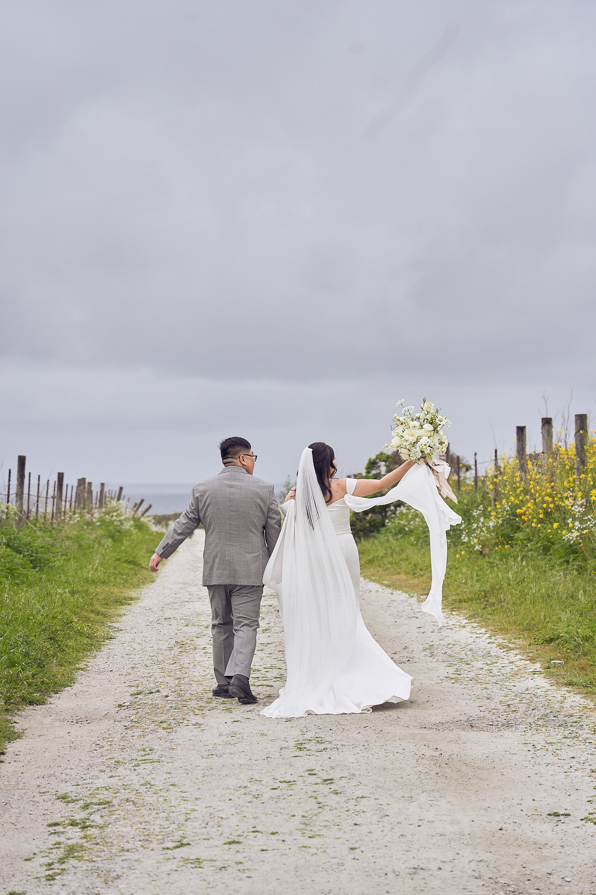
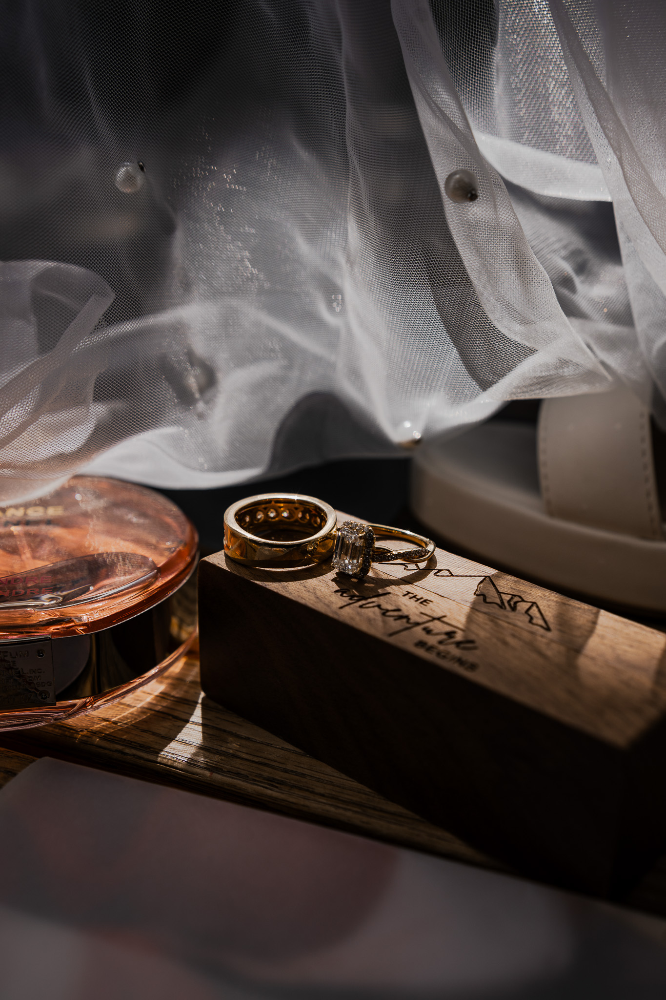
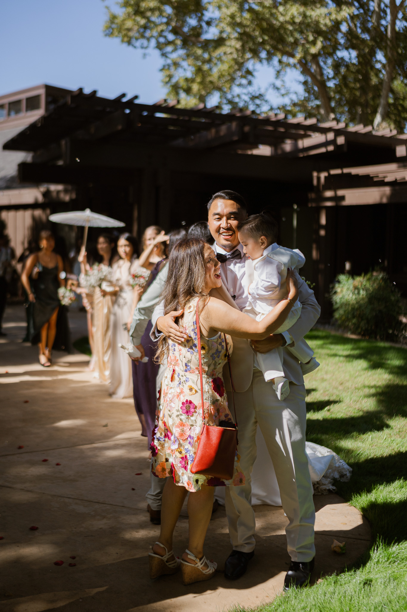

Documentary wedding & event photography
Hold onto what it felt like.
Unscripted photographs shaped by people, place, and everything that happens in between.
Butte County · Northern California
The story
Documentary at heart. Cinematic in feeling.
Selected stories · 01—04
A day, remembered in fragments.
No forced performance. Just atmosphere, connection, and the small moments that become the whole story.


Quiet moments, loud memories.


Photographs that breathe.
Images are given room to stand alone, then placed together to reveal the rhythm of the day.
The approach
Present, observant, never overproduced.
I’m Pachia, a California-based photographer drawn to honest celebrations, meaningful details, and the relationships unfolding around them. I photograph celebrations as they unfold, gently guiding when needed - making space for real connection. The result is a gallery that feels honest in the moment and cinematic in memory.
- 01Real emotion over perfect poses
- 02People and place in equal measure
- 03A full story, not only highlights

Weddings · Events · Portraits
Let the day feel like yours.
For celebrations with feeling, movement, and a story worth preserving.
Send an inquiry